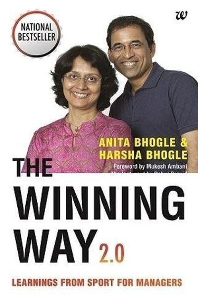

Library › Self-Improvement
The Winning Way — Summary & Key Lessons

What champion sports teams teach us about work, leadership and life.
📖 OPEN THE FULL INTERACTIVE BREAKDOWN →🌐 Read it in Hindi, Hinglish, Gujarati, Tamil & 22 more languages — free, with audio.
💡 The Big Idea
From the dressing rooms of cricket's greatest teams, the Bhogles extract the anatomy of sustained success: a captain who creates culture, players who stay hungry and humble, rituals of preparation, honest handling of defeat, and the continuous reinvention that keeps champions from becoming victims of their own success.
🧠 The 6 Key Lessons
Lesson 1: Culture Is the Captain's Real Job
Chapter 1: The Leader
The book shows that great captains — from Steve Waugh to MS Dhoni — are remembered less for their runs than for the environment they created. A leader's core function is not playing best but setting the emotional and behavioral standards of the team. Culture is designed, not discovered.
📖 Example: MS Dhoni's calm in the 2011 World Cup final steadied an entire nation's nerves, but his real legacy was the culture of composure he built — young players absorbed his stillness under pressure and the team became famous for finishing close games. Read the full example →
⚡ Do this: As a leader (of a team, family or project), write down the three behaviors you will deliberately model, then check weekly whether the team is absorbing them.
Lesson 2: Hunger and Humility Must Coexist
Chapter 2: The Players
The most successful cricketers combined ferocious hunger with visible humility — they practiced like they had everything to prove and spoke like they had nothing to prove. Ego is the opposite: it makes you protect your status instead of your performance. The champion's paradox: confident enough to attempt, humble enough to learn.
📖 Example: Sachin Tendulkar, the greatest batsman of his era, was often the first at practice and the most coachable — and Rahul Dravid rebuilt his technique mid-career because he never stopped treating himself as a student. Their hunger never retired. Read the full example →
⚡ Do this: Pick one skill where you are already 'good' and deliberately take a beginner's lesson in it this month — protect your hunger.
Lesson 3: Rituals Turn Preparation Into Performance
Chapter 3: Preparation
Champions don't rely on match-day adrenaline; they build rituals — net routines, mental rehearsals, team meetings — that make performance automatic. The Bhogles emphasize that preparation is not what you do before the event; it is the event, in miniature. Consistency of process beats intensity of effort.
📖 Example: Australia's dominant teams of the 2000s had famously rigorous training camps and team rituals that built trust off the field — slip catching drills, dinner traditions — so that on the field, pressure situations felt like rehearsed scenes rather than surprises. Read the full example →
⚡ Do this: Create one pre-performance ritual for your most important recurring task (meeting, presentation, workout) and repeat it until it feels automatic.
Lesson 4: Defeat Is Data, Not Identity
Chapter 4: Handling Defeat
The book dissects how champion teams process losses: quickly, honestly and without blame theater. Great teams treat defeat as the most information-dense event available and mine it within hours. Teams that 'can't handle losing' are really teams that can't handle learning.
📖 Example: After losing the 2003 World Cup final, Australia's dressing room reportedly held honest, brief reviews and moved on — they lost a match but never lost the plot, because their identity was attached to process, not results. Read the full example →
⚡ Do this: After your next failure, hold a 15-minute 'defeat review' with yourself: what did the loss reveal that a win would have hidden?
Lesson 5: Trust Is a Performance Enhancer
Chapter 5: The Team
Teams that trust each other communicate more, take smarter risks and recover faster from mistakes. The Bhogles show trust is built in small moments — backing a struggling teammate publicly, sharing credit, absorbing blame. Trust is not a soft value; it is a measurable performance variable.
📖 Example: When a young, struggling player was backed publicly by his captain instead of dropped, the player's subsequent success was attributed to that trust. Across sports, the pattern repeats: players perform beyond their talent when they feel the team will catch… Read the full example →
⚡ Do this: Identify one teammate you don't fully trust. This week, give them one public backing or shared credit — trust is built by extending it, not waiting for it.
Lesson 6: Reinvent Before the Trophy Molds You
Chapter 6: Renewal
The graveyard of sports is full of champion teams that kept playing last year's game. Sustained winners systematically refresh: new blood, new roles, new tactics — often when they are on top, which feels most risky. Complacency after success is the most predictable form of failure.
📖 Example: Great teams blood young players even in winning seasons, so when stars retire there is no cliff — just a handover. Teams that failed to do this, like several post-championship squads, fell from the top in a single season. Read the full example →
⚡ Do this: What is your 'next season' plan? Identify one skill, role or project to add now — while you are still winning, not after the loss.
✅ 5-Step Action Plan
- Write the three behaviors you will model as a leader and audit weekly
- Take a beginner's lesson in a skill where you're already good
- Create one pre-performance ritual and repeat it 10 times
- Run a 15-minute defeat review after your next failure
- Give one teammate public backing this week and plan one reinvention while winning
⚠️ When This Doesn't Work
⚠️ When this doesn't work: Sports-team metaphors oversimplify workplaces — in cricket the captain has total authority, but in modern organizations power is diffuse, and 'culture' can become toxic conformity. Adapt the lessons (process, trust, humility) while respecting individual autonomy; don't run your office like a dressing room.
💀 The Graveyard Proves It
🏏 Hansie Cronje — The Captain Who Sold the Game. Burn: Career, honor, a nation's trust. Read the full case study →
💬 Best Quotes from The Winning Way
- “Talent wins matches; culture wins championships.”
- “The best teams are the ones where the best players are also the best teammates.”
- “Defeat is only permanent if you refuse to learn from it.”
Interactive version: mark lessons as read, listen in your language, share quote cards.